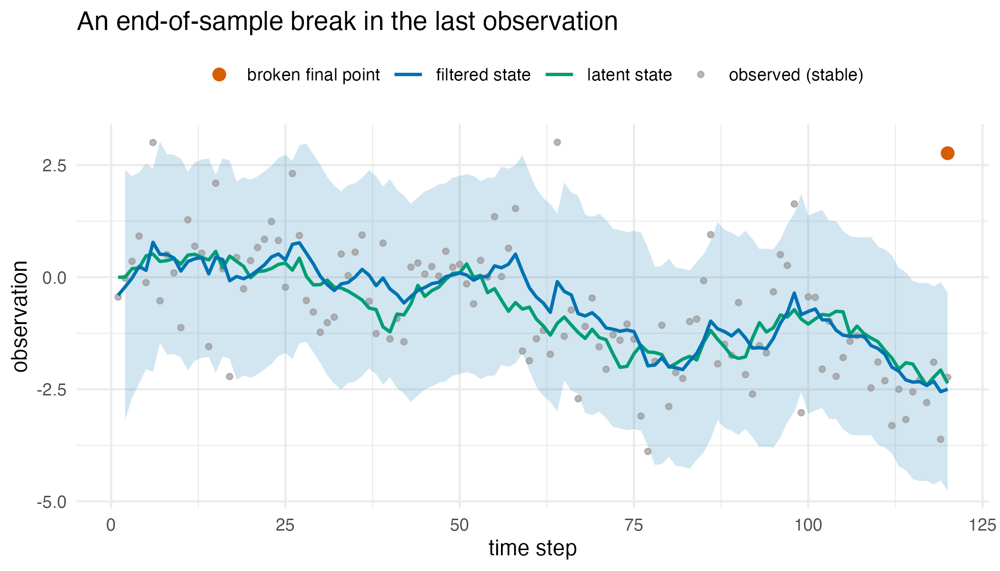
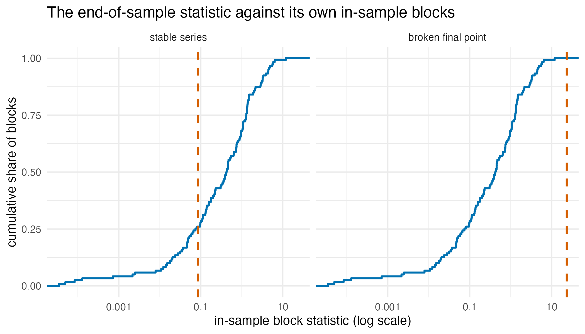
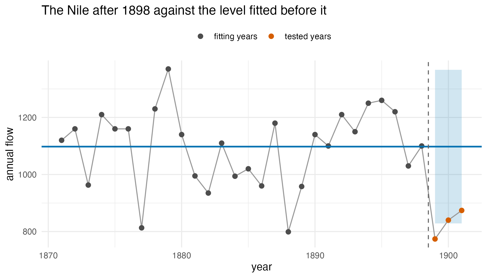

Testing the last observation for instability
Source:vignettes/articles/extended/end_of_sample.Rmd
end_of_sample.Rmd
has_ggplot2 <- requireNamespace("ggplot2", quietly = TRUE)The problem
An analyst monitoring a series has a model fitted to everything up to
yesterday, and this morning one more observation arrived. The question
is narrow and awkward: one more observation has just arrived – is it
consistent with the model I fitted, or has something just changed?
It is awkward because the suspect window is tiny. The breakpoint test of
Chow (1960) and the sup-Wald test of Andrews (1993) need observations on
both sides of the break, and the parameters of the post-break regime
cannot be estimated from a single new point or a handful. Chow’s
predictive test is built for this case and assumes normal errors
(Andrews, 2003). gmm_eos_test() answers the question in
this regime, following Andrews (2003).
Package capabilities
gmm_eos_test() runs the filter implied by the operator
calculus over the series, which for the single-component prior and
Gaussian noise it accepts is the Kalman filter, scores the last
m one-step filter innovations, and calibrates that score.
It takes the model exactly as gmm_filter() does: a
single-component gmm() prior, a dynamics list
carrying the state-transition and process-noise matrices, and a
measurement list carrying the observation and
observation-noise matrices.
The statistic is built from the filter’s own output. At each step the
filter returns a one-step predictive mean and an innovation covariance
,
so the standardised innovation
is standard normal under a correct, stable, linear-Gaussian model. The
statistic sums the last m squared standardised innovations,
which a break inflates.
Two calibrations are offered. method = "chisq" refers
the statistic to a
distribution on m times the observation dimension degrees
of freedom, exact when the innovations are Gaussian and the model is
given. method = "andrews" is a subsampling calibration
after the P-test of Andrews (2003): the statistic’s rank among the
in-sample overlapping m-blocks of the same innovations
gives the p-value. It differs from Andrews’ test in two ways. Its
p-value counts the tested block itself. Its block statistics are
computed at the supplied model, not at estimates that leave out each
block. It does not assume Gaussian innovations, and its validity is
asymptotic, as the series grows with m fixed, under
stationarity and ergodicity; at a finite length its size can differ from
nominal in either direction. The returned object also carries those
in-sample block statistics, so the calibration can be inspected
directly.
Addressing the problem
set.seed(20260621)The model and a stable series
A local-level model: a random walk observed with noise.
prior <- gmm(weights = 1, means = list(0), covariances = list(matrix(10)))
dynamics <- list(A = matrix(1), Q = matrix(0.04)) # the state random walk
measurement <- list(C = matrix(1), R = matrix(1)) # the noisy observation
n <- 120L
level <- cumsum(c(0, rnorm(n - 1L, 0, sqrt(0.04))))
y_stable <- level + rnorm(n, 0, 1)The same series with a broken final observation
Copy the series and push the final observation away by five standard deviations of the observation noise.
y_break <- y_stable
y_break[n] <- y_break[n] + 5
test_stable <- gmm_eos_test(
prior, dynamics, measurement, y_stable, m = 1L, method = "andrews"
)
test_break <- gmm_eos_test(
prior, dynamics, measurement, y_break, m = 1L, method = "andrews"
)The returned object is a list whose in_sample_blocks
element holds one number per in-sample block.
| Field | Stable series | Broken final point |
|---|---|---|
| statistic | 0.085 | 23.194 |
| p-value | 0.7417 | 0.0083 |
| reject at 0.05 | FALSE | TRUE |
| calibration | andrews | andrews |
| window m | 1 | 1 |
| chi-square degrees of freedom | – | – |
What the filter expected
The filter’s own path shows why the broken point is surprising. The
band below is the one-step predictive band: the filter’s forecast of
each observation from the ones before it, with two predictive standard
deviations either side, which is the scale the statistic divides by. It
is built from gmm_filter() on the stable series, with the
broken final observation marked against it.
filtered <- gmm_filter(
prior, dynamics, measurement, y_stable, ridge_eps = 0
)
path <- filtered$summary
# one-step predictive mean and sd of y_t, from the filtered state at t - 1
pred_mean <- c(prior@means[[1L]], path$mean_1[-n])
pred_sd <- sqrt(c(prior@covariances[[1L]][1L, 1L], path$sd_1[-n]^2) +
dynamics$Q[1L, 1L] + measurement$R[1L, 1L])
outside <- sum(abs(y_stable - pred_mean)[-1L] > 2 * pred_sd[-1L])
series_df <- data.frame(
t = seq_len(n),
observed = y_stable,
truth = level,
filtered = path$mean_1,
lo = pred_mean - 2 * pred_sd,
hi = pred_mean + 2 * pred_sd
)
break_df <- data.frame(t = n, y = y_break[n])
ggplot2::ggplot(series_df, ggplot2::aes(t)) +
ggplot2::geom_ribbon(
data = series_df[-1L, ], ggplot2::aes(ymin = lo, ymax = hi),
fill = "#0072B2", alpha = 0.18
) +
ggplot2::geom_point(
ggplot2::aes(y = observed, colour = "observed (stable)"),
size = 1.1, alpha = 0.7
) +
ggplot2::geom_line(
ggplot2::aes(y = truth, colour = "latent state"), linewidth = 0.8
) +
ggplot2::geom_line(
ggplot2::aes(y = filtered, colour = "filtered state"), linewidth = 0.8
) +
ggplot2::geom_point(
data = break_df, ggplot2::aes(t, y, colour = "broken final point"),
size = 2.6
) +
ggplot2::scale_colour_manual(
name = NULL,
values = c(
"observed (stable)" = "grey60",
"latent state" = "#009E73",
"filtered state" = "#0072B2",
"broken final point" = "#D55E00"
)
) +
ggplot2::labs(
x = "time step", y = "observation",
title = "An end-of-sample break in the last observation"
) +
ggplot2::theme_minimal(base_size = 11) +
ggplot2::theme(legend.position = "top")
The local-level series, the latent state that generated it, the filtered state, and the one-step predictive band, two predictive standard deviations either side of the filter’s forecast of each observation. The band starts at the second step, after the diffuse prior. The broken final observation sits far outside the band, which is what inflates the statistic.
How the subsampling p-value is reached
The subsampling calibration compares the end-of-sample statistic with the in-sample blocks of the same series, so the p-value can be read straight off the empirical distribution of those blocks.
blocks_df <- rbind(
data.frame(
block = test_stable$in_sample_blocks, series = "stable series"
),
data.frame(
block = test_break$in_sample_blocks, series = "broken final point"
)
)
blocks_df$series <- factor(
blocks_df$series, levels = c("stable series", "broken final point")
)
rule_df <- data.frame(
series = factor(
c("stable series", "broken final point"),
levels = c("stable series", "broken final point")
),
statistic = c(test_stable$statistic, test_break$statistic)
)
ggplot2::ggplot(blocks_df, ggplot2::aes(block)) +
ggplot2::stat_ecdf(geom = "step", linewidth = 0.8, colour = "#0072B2") +
ggplot2::geom_vline(
data = rule_df, ggplot2::aes(xintercept = statistic),
colour = "#D55E00", linetype = "dashed", linewidth = 0.8
) +
ggplot2::facet_wrap(~ series) +
ggplot2::scale_x_log10(labels = function(v) {
format(v, scientific = FALSE, drop0trailing = TRUE, trim = TRUE)
}) +
ggplot2::labs(
x = "in-sample block statistic (log scale)",
y = "cumulative share of blocks",
title = "The end-of-sample statistic against its own in-sample blocks"
) +
ggplot2::theme_minimal(base_size = 11)
The empirical distribution of the in-sample block statistics for each series, with the end-of-sample statistic marked. The subsampling p-value is , where is the number of blocks lying at or beyond the dashed line, so the stable statistic sits inside the bulk while the broken one clears every block in the series.
What size the two calibrations actually hold
The chi-square calibration is exact when the model is given. The diffuse prior enters the forecast of the last observation with a weight that shrinks at every step, to about 0.0001 at , so the chi-square reference is essentially exact here too. The size is still worth measuring rather than assuming. The study below simulates from the same local-level model under the null and records the rejection rate at a nominal 0.05, with the Monte Carlo standard error the replicate count supports.
simulate_null <- function(n_obs) {
lv <- cumsum(c(0, rnorm(n_obs - 1L, 0, sqrt(0.04))))
lv + rnorm(n_obs, 0, 1)
}
empirical_size <- function(n_obs, method, n_rep) {
p <- vapply(seq_len(n_rep), function(i1) {
gmm_eos_test(
prior, dynamics, measurement, simulate_null(n_obs),
m = 1L, method = method
)$p_value
}, numeric(1L))
size <- mean(p < 0.05)
c(size = size, se = sqrt(size * (1 - size) / n_rep), n_rep = n_rep)
} # ends empirical_size, one row of the size study
n_rep_short <- 250L
n_rep_long <- 150L
size_chisq_30 <- empirical_size(30L, "chisq", n_rep_short)
size_chisq_120 <- empirical_size(120L, "chisq", n_rep_long)
size_andrews_30 <- empirical_size(30L, "andrews", n_rep_short)
chisq_sizes <- c(size_chisq_30[["size"]], size_chisq_120[["size"]])
chisq_ses <- c(size_chisq_30[["se"]], size_chisq_120[["se"]])
chisq_worst_se <- max(abs(chisq_sizes - 0.05) / chisq_ses)The subsampling p-value takes only the values for . If the end block’s rank among the blocks is uniform, the size at a nominal level is the share of that grid below the level, and it can be computed without simulation. The rank is uniform when the blocks are exchangeable, which holds at with the model given, apart from the first few innovations under the diffuse prior. It does not hold with estimated parameters, or for the overlapping blocks of .
attainable_size <- function(n_obs, m = 1L, alpha = 0.05) {
n_block <- n_obs - 2L * m + 1L
p_grid <- (1L + seq.int(0L, n_block)) / (1L + n_block)
mean(p_grid < alpha)
} # ends attainable_size, the size when the end block's rank is uniform
floor_30 <- 1 / (30L - 2L + 2L)
floor_120 <- 1 / (120L - 2L + 2L)
attainable_30 <- attainable_size(30L)
attainable_120 <- attainable_size(120L)
diff_30 <- size_chisq_30[["size"]] - size_andrews_30[["size"]]
diff_30_se <- sqrt(size_chisq_30[["se"]]^2 + size_andrews_30[["se"]]^2)
andrews_ses_from_grid <- abs(size_andrews_30[["size"]] - attainable_30) /
size_andrews_30[["se"]]| Calibration | n | Quantity | Value | Std. error | Replicates |
|---|---|---|---|---|---|
| chi-square | 30 | simulated size | 0.0640 | 0.0155 | 250 |
| chi-square | 120 | simulated size | 0.0667 | 0.0204 | 150 |
| subsampling | 30 | simulated size | 0.0400 | 0.0124 | 250 |
| subsampling | 30 | grid size, uniform rank | 0.0333 | – | – |
| subsampling | 120 | grid size, uniform rank | 0.0417 | – | – |
Interpretation
On the stable series the statistic is 0.085 with a subsampling p-value of 0.742, and the test does not reject: the last observation sits where the filter expects it. Pushing that same observation five observation-noise standard deviations away lifts the statistic to 23.2, a p-value of 0.0083, and a rejection. That is the answer to the opening question in the form the analyst needs it: on this series, the arriving observation is flagged as inconsistent with the fitted model, and the same machinery leaves the unbroken series alone.
The first figure shows why. The broken point sits 4.8 predictive standard deviations from the filter’s forecast for , the standardised innovation whose square is the statistic, far outside the band. Of the 119 stable observations from the second step on, 8 fall outside the band, or 6.7 per cent, against the 4.6 per cent a band of two standard deviations leaves out under the model. The second figure shows how that surprise becomes a p-value: for the stable series the statistic falls inside the bulk of the in-sample blocks, so a substantial share of blocks lie beyond it, while for the broken series it clears every one of the 119 blocks, which drives the p-value to its floor.
That floor is the first thing the size table makes concrete. At and the smallest attainable p-value is 0.0083, and the broken series attains it exactly. On a much shorter series the floor bites: at the smallest attainable p-value is 0.033, so the subsampling calibration can reject at the 0.05 level only when the end-of-sample block is larger than every earlier block in the series. With the model given and , the rank is uniform up to the first few innovations, so the size is the grid value: 0.0333 at and 0.0417 at , both below 0.05. The simulated size at , 0.04 over 250 replicates with a standard error of 0.012, sits 0.5 standard errors from the grid value. With estimated parameters or the grid value is not the size, and the simulation in the numerical illustration finds sizes above it.
The chi-square calibration is continuous and carries no such floor. Its simulated size is 0.064 at (standard error 0.015, 250 replicates) and 0.067 at (standard error 0.02, 150 replicates). Both sit within about 0.9 standard errors of the nominal 0.05, so at these replicate counts the study resolves no departure from nominal for either length. At the simulated sizes of the two calibrations differ by 0.024, 1.2 standard errors of the difference, so the simulation does not resolve the contrast between them either. The contrast comes from the grid: with the model given, the subsampling test has a size of 0.0333 at and , while the chi-square calibration is continuous and can spend the full 0.05.
Limitations
A rejection rate estimated from 250 replicates carries a standard error near 0.014, so a departure from nominal of one or two percentage points is beyond the resolution of the size study above. It establishes the order of the size, not the exact size at a given series length.
The assumptions of both calibrations hold when the innovations are
Gaussian. They part company when the observation noise is heavy-tailed:
the parametric
reference is then mis-specified, while the subsampling test judges the
end-of-sample block only against the other blocks of the same series and
needs no parametric reference. This vignette simulates Gaussian noise
throughout and so does not exercise that divergence;
method = "andrews" is the option to reach for when
normality is in doubt, at the cost of the discreteness documented above.
Which calibration is preferable therefore depends on which failure the
analyst minds more: a mis-specified reference distribution, or a test
that cannot spend its nominal level. The numerical illustration that
follows places both calibrations beside the structural-break,
changepoint and forecast-interval tools of four other packages, on the
Nile series and in simulation.
The test is defined for a fitted linear-Gaussian state-space model,
supplied exactly as for gmm_filter(): a single-component
gmm prior, a dynamics list with the
state-transition and process-noise matrices, and a
measurement list with the observation and observation-noise
matrices. Gaussian-sum process or measurement noise is rejected rather
than approximated, because neither calibration is defined for it. The
small-m regime (m = 1, 2, 3) is the point of
the test, and m must be smaller than the series length.
One further caution belongs to the model rather than the test. The
band in the first figure is the one-step predictive band, which the
statistic divides by, not the filtered state’s standard deviation that
gmm_filter() returns; at
the predictive standard deviation is 2.6 times the filtered one. A model
whose noise covariances are themselves estimated on the same short
series can understate both, and the test then inherits that optimism: it
is a test of the last observation against the model, not a test of the
model.
Numerical illustration
The Nile at 1898, with five packages
The annual flow of the Nile at Aswan, shipped with R as
Nile, falls to a lower level after 1898 (Cobb, 1978). We
fit a local-level model to the years 1871–1898 and ask each method
whether the years that follow are consistent with it: 1899 alone, so
,
and 1899–1901, so
.
The documented change is the reference every method is scored against,
and the score is a p-value at the 0.05 level.
Beside the two calibrations of gmm_eos_test() stand six
tests: five from four packages and a t-test from base R. strucchange
(Zeileis et al., 2002) supplies a sup-F test over the breaks whose final
segment lies within the last
years, and an OLS-based CUSUM test over the whole sample. changepoint
(Killick and Eckley, 2014) supplies cpt.mean() with its
defaults, the PELT search under the MBIC penalty, run on the series
scaled to unit variance over the fitting years because its Normal cost
takes the variance as one; it returns locations rather than a p-value,
and a change located within the last
years counts as a detection. KFAS (Helske, 2017) and dlm (Petris, 2010)
each fit their own local level to 1871–1898 by maximum likelihood and
check every tested year against its one-step forecast interval at level
,
a Bonferroni correction. It would hold the check’s size at or below 0.05
whatever the window if the fitted parameters were the true ones; the
simulation below measures the size with estimated parameters. The
p-value reported is that of the largest standardised forecast error,
times
.
The last test is a t-test on the residuals of the forecasts made at 1898
from the local level fitted by StructTS().
The four packages install from CRAN once and load as usual:
install.packages(c("strucchange", "changepoint", "KFAS", "dlm"))
library(strucchange)
library(changepoint)
library(KFAS)
library(dlm)The fitting years are 1871–1898, and the local level is estimated on them alone:
nile <- as.numeric(window(Nile, 1871, 1901))
year <- 1871:1901
n_fit <- 28L
nile_fit <- nile[seq_len(n_fit)]
level_fit <- StructTS(nile_fit, type = "level")
prior_nile <- gmm(weights = 1, means = list(nile_fit[1L]),
covariances = list(matrix(1e7)))
dynamics_nile <- list(A = matrix(1), Q = matrix(level_fit$coef[["level"]]))
measurement_nile <- list(C = matrix(1),
R = matrix(level_fit$coef[["epsilon"]]))The state-space fits and the t-test use those years alone and are
applied to the series truncated
years later; the strucchange tests and cpt.mean() run on
the whole truncated series. A test that is not defined at that window
returns NA, which the table below prints as “not
defined”.
nile_tests <- function(m) {
y <- nile[seq_len(n_fit + m)]
n <- length(y)
last <- (n_fit + 1L):n
p_chisq <- gmm_eos_test(prior_nile, dynamics_nile, measurement_nile, y,
m = m, method = "chisq")$p_value
p_andrews <- gmm_eos_test(prior_nile, dynamics_nile, measurement_nile, y,
m = m, method = "andrews")$p_value
# strucchange needs at least two observations after a break in a mean
p_supf <- if (m >= 2L) {
unname(sctest(Fstats(y ~ 1, from = n - m, to = n - 2L))$p.value)
} else NA_real_
p_cusum <- unname(sctest(efp(y ~ 1, type = "OLS-CUSUM"))$p.value)
cp <- cpts(cpt.mean(y / sd(nile_fit)))
found_cpt <- any(cp >= n_fit)
kfas_fit <- fitSSM(SSModel(nile_fit ~ SSMtrend(1L, Q = NA), H = NA),
inits = log(c(var(nile_fit), var(nile_fit))),
method = "BFGS")
kfas_model <- SSModel(y ~ SSMtrend(1L, Q = kfas_fit$model$Q[1L]),
H = kfas_fit$model$H[1L])
kfas_pred <- predict(kfas_model, interval = "prediction", level = 0.95,
filtered = TRUE)
kfas_z <- (y[last] - kfas_pred[last, "fit"]) /
((kfas_pred[last, "upr"] - kfas_pred[last, "lwr"]) / (2 * qnorm(0.975)))
p_kfas <- min(1, m * 2 * pnorm(-max(abs(kfas_z))))
dlm_build <- function(pars) {
dlmModPoly(1L, dV = exp(pars[1L]), dW = exp(pars[2L]))
}
dlm_fit <- dlmMLE(nile_fit, parm = log(c(var(nile_fit), var(nile_fit))),
build = dlm_build)
dlm_filt <- dlmFilter(y, dlm_build(dlm_fit$par))
dlm_var <- unlist(dlmSvd2var(dlm_filt$U.R, dlm_filt$D.R)) +
exp(dlm_fit$par[1L])
dlm_z <- (y[last] - dlm_filt$f[last]) / sqrt(dlm_var[last])
p_dlm <- min(1, m * 2 * pnorm(-max(abs(dlm_z))))
resid <- y[last] - predict(level_fit, n.ahead = m)$pred
p_t <- if (m > 1L) t.test(resid)$p.value else NA_real_
list(
p = c("proxymix chi-square" = p_chisq,
"proxymix subsampling" = p_andrews,
"strucchange sup-F" = p_supf,
"strucchange OLS-CUSUM" = p_cusum,
"KFAS forecast interval" = p_kfas,
"dlm forecast interval" = p_dlm,
"t-test on forecast residuals" = p_t),
found_cpt = found_cpt
)
}
nile_1 <- nile_tests(1L)
nile_3 <- nile_tests(3L)| Test | m = 1 | m = 3 |
|---|---|---|
| proxymix chi-square | 0.018 (reject) | 0.012 (reject) |
| proxymix subsampling | 0.034 (reject) | 0.037 (reject) |
| strucchange sup-F | not defined | 0.003 (reject) |
| strucchange OLS-CUSUM | 0.881 | 0.427 |
| KFAS forecast interval | 0.018 (reject) | 0.055 |
| dlm forecast interval | 0.018 (reject) | 0.055 |
| t-test on forecast residuals | not defined | 0.012 (reject) |
| changepoint cpt.mean | no change located | no change located |

The Nile flow for 1871–1901 with the local level fitted to 1871–1898 and its 95% forecast band for the three years that follow. The dashed vertical line separates the fitting years from the tested years. The 1899 observation falls below the band.
The local level fitted to 1871–1898 has a level variance of zero, so
the model is a constant mean with an observation standard deviation of
135, and the 1899 flow sits 2.40 of those standard deviations below it.
At
the chi-square calibration returns a p-value of 0.018, and the KFAS and
dlm interval checks return 0.018 and 0.018: at a single observation the
three are the same test, a one-step forecast error referred to its
standard deviation, and they differ only in the fitted variances. The
subsampling calibration returns 0.034, which is its floor of
at this length: the 1899 block is the largest in the series. The sup-F
test is not defined at
,
because strucchange’s Fstats() admits a break in a mean no
later than
,
so at least two observations must follow it. The t-test is not defined
at
either, because it estimates the variance of the forecast residuals from
the tested years themselves. Chow’s predictive test, which takes that
variance from the fitting years, is defined at one observation. The
OLS-CUSUM test, which asks about the whole sample, returns 0.881.
cpt.mean() locates no change on the scaled series. At
the sup-F test is defined and returns 0.003, the chi-square calibration
0.012 and the t-test 0.012, while the interval checks, spending their
level over three years, return 0.055 and 0.055. The subsampling p-value
is again at its floor,
.
This is one series and one documented change, which shows which tests
exist at each window but cannot measure their size or power, so the
simulation below does.
A simulation benchmark
The simulation generates 1000 stationary AR(1) series of length 100
with coefficient 0.6 and unit innovation variance. For each series and
each window
,
every method is applied twice: to the series as generated, which gives
the size, and to the series with its last
observations raised by 3 innovation standard deviations, which gives the
power. The state-space methods and the t-test are fitted to the first
observations; the strucchange tests and cpt.mean() run on
the whole series, as described below. The reference is the design
itself, whether or not a shift was applied, and the score is the
rejection rate at a nominal 0.05.
proxymix and the t-test receive the AR(1) fitted by
arima(), written as a state-space model with the state
observed exactly; the t-test’s residuals are those of the forecasts made
at
.
KFAS and dlm each fit their own AR(1) to the fitting window after its
mean is removed, and check the last
observations against one-step forecast intervals at level
, as on the Nile. strucchange runs the
sup-F test on the regression of
on
over the breaks whose final segment lies within the last
observations, which needs at least three observations after the break,
so it is defined at
and
and not at
.
Its OLS-CUSUM test runs over the whole sample. cpt.mean()
runs on the series scaled to unit variance over the fitting window, and
a change located within the last
observations counts as a rejection. A rejection rate near 0.05 from 1000
series carries a Monte Carlo standard error of about 0.007, and one near
0.5 about 0.016. This chunk is complete and runs as shown, but it took
about 18 minutes on one core (R 4.6.1, Apple silicon), so the table that
follows it is read from its stored output. For a quick reduced run, set
n_rep to a small number such as 20L on the
line that defines it.
library(proxymix)
library(strucchange)
library(changepoint)
library(KFAS)
library(dlm)
n <- 100L # length of each series
phi <- 0.6 # autoregressive coefficient
delta <- 3 # level shift, in innovation standard deviations
m_vec <- c(1L, 3L, 5L)
n_rep <- 1000L # series per window
# every test is fitted to the first n - m observations of y and applied to
# its last m; NA marks a test that is not defined at that window
p_values <- function(y, m) {
n <- length(y)
y_fit <- y[seq_len(n - m)]
last <- (n - m + 1L):n
ar <- arima(y_fit, order = c(1L, 0L, 0L))
a1 <- coef(ar)[["ar1"]]
mu <- coef(ar)[["intercept"]]
s2 <- ar$sigma2
prior <- gmm(weights = 1, means = list(mu),
covariances = list(matrix(s2 / (1 - a1^2))))
dynamics <- list(A = matrix(a1), b = mu * (1 - a1), Q = matrix(s2))
measurement <- list(C = matrix(1), R = matrix(0))
p_chisq <- gmm_eos_test(prior, dynamics, measurement, y, m = m,
method = "chisq")$p_value
p_andrews <- gmm_eos_test(prior, dynamics, measurement, y, m = m,
method = "andrews")$p_value
resid <- y[last] - predict(ar, n.ahead = m)$pred
p_t <- if (m > 1L) t.test(resid)$p.value else NA_real_
# strucchange needs at least three observations after a break in an AR(1)
reg <- data.frame(y = y[-1L], y_lag = y[-n])
n_reg <- nrow(reg)
p_supf <- if (m >= 3L) {
fs <- Fstats(y ~ y_lag, data = reg, from = n_reg - m, to = n_reg - 3L)
unname(sctest(fs)$p.value)
} else NA_real_
p_cusum <- unname(sctest(efp(y ~ y_lag, data = reg,
type = "OLS-CUSUM"))$p.value)
cp <- cpts(cpt.mean(y / sd(y_fit)))
p_cpt <- if (any(cp >= n - m)) 0 else 1
y_bar <- mean(y_fit)
kfas_update <- function(pars, model) {
part <- SSMarima(ar = 0.999 * tanh(pars[1L]), Q = exp(pars[2L]))
model["T", "arima"] <- part$T
model["R", "arima"] <- part$R
model["Q", "arima"] <- part$Q
model["P1", "arima"] <- part$P1
model
}
kfas_fit <- fitSSM(
SSModel(I(y_fit - y_bar) ~ -1 + SSMarima(ar = 0.5, Q = 1), H = 0),
inits = c(0, 0), updatefn = kfas_update, method = "BFGS"
)
kfas_par <- kfas_fit$optim.out$par
kfas_model <- SSModel(
I(y - y_bar) ~ -1 + SSMarima(ar = 0.999 * tanh(kfas_par[1L]),
Q = exp(kfas_par[2L])),
H = 0
)
kfas_pred <- predict(kfas_model, interval = "prediction", level = 0.95,
filtered = TRUE)
kfas_z <- (y[last] - y_bar - kfas_pred[last, "fit"]) /
((kfas_pred[last, "upr"] - kfas_pred[last, "lwr"]) / (2 * qnorm(0.975)))
p_kfas <- min(1, m * 2 * pnorm(-max(abs(kfas_z))))
dlm_build <- function(pars) {
dlmModARMA(ar = 0.999 * tanh(pars[1L]), sigma2 = exp(pars[2L]), dV = 0)
}
dlm_fit <- dlmMLE(y_fit - y_bar, parm = c(0, 0), build = dlm_build)
dlm_filt <- dlmFilter(y - y_bar, dlm_build(dlm_fit$par))
dlm_var <- unlist(dlmSvd2var(dlm_filt$U.R, dlm_filt$D.R))
dlm_z <- (y[last] - y_bar - dlm_filt$f[last]) / sqrt(dlm_var[last])
p_dlm <- min(1, m * 2 * pnorm(-max(abs(dlm_z))))
c("proxymix chi-square" = p_chisq, "proxymix subsampling" = p_andrews,
"strucchange sup-F" = p_supf, "strucchange OLS-CUSUM" = p_cusum,
"changepoint cpt.mean" = p_cpt, "KFAS forecast interval" = p_kfas,
"dlm forecast interval" = p_dlm, "t-test on forecast residuals" = p_t)
}
one_series <- function(r) {
set.seed(r)
y <- as.numeric(arima.sim(list(ar = phi), n = n))
do.call(rbind, lapply(m_vec, function(m) {
y_shift <- y
y_shift[(n - m + 1L):n] <- y_shift[(n - m + 1L):n] + delta
p_null <- p_values(y, m)
p_shift <- p_values(y_shift, m)
data.frame(r = r, m = m, method = rep(names(p_null), 2L),
scenario = rep(c("no shift", "shift"), each = length(p_null)),
reject = c(p_null, p_shift) < 0.05,
stringsAsFactors = FALSE)
}))
}
res <- do.call(rbind, lapply(seq_len(n_rep), one_series))
sim_tab <- aggregate(reject ~ m + scenario + method, data = res, FUN = mean,
na.action = na.pass)
names(sim_tab)[4L] <- "rate"
sim_tab$se <- sqrt(sim_tab$rate * (1 - sim_tab$rate) / n_rep)
sim_tab| Test | Size 1 | Power 1 | Size 3 | Power 3 | Size 5 | Power 5 |
|---|---|---|---|---|---|---|
| proxymix chi-square | 0.068 | 0.834 | 0.064 | 0.835 | 0.070 | 0.852 |
| proxymix subsampling | 0.049 | 0.798 | 0.062 | 0.801 | 0.073 | 0.830 |
| strucchange sup-F | – | – | 0.237 | 0.972 | 0.038 | 0.810 |
| strucchange OLS-CUSUM | 0.018 | 0.021 | 0.018 | 0.014 | 0.018 | 0.014 |
| changepoint cpt.mean | 0.001 | 0.088 | 0.007 | 0.461 | 0.018 | 0.645 |
| KFAS forecast interval | 0.090 | 0.836 | 0.094 | 0.777 | 0.090 | 0.777 |
| dlm forecast interval | 0.069 | 0.830 | 0.070 | 0.772 | 0.070 | 0.782 |
| t-test on forecast residuals | – | – | 0.146 | 0.777 | 0.269 | 0.972 |
Of the eight tests, six are defined at
.
Four of them score the one-step forecast error of the last observation:
the two calibrations of gmm_eos_test() and the
forecast-interval checks of KFAS and dlm, which at one observation are
the same statistic as the chi-square calibration, with parameters from
each package’s own fit. The powers of the chi-square calibration, KFAS
and dlm are within 0.006 of each other, at 0.834 for the chi-square
calibration, 0.836 for KFAS and 0.830 for dlm, and their sizes are
0.068, 0.090 and 0.069, all above the nominal 0.05, because the
parameters are estimated on the fitting window and the tests treat them
as known. The subsampling rank does not depend on the innovation
variance, which scales every block alike, but it still uses the
estimated autoregressive coefficient and mean, and its in-sample blocks
are residuals of the fit while the end block is not. It has a size of
0.049 and a power of 0.798 at
.
The sup-F test and the t-test are not defined, the OLS-CUSUM test
rejects the shifted series in 0.021 of cases, and
cpt.mean() locates a change in the last observation in
0.088 of shifted series against 0.001 of unshifted ones.
Across the three windows the chi-square calibration’s size is 0.064
to 0.070 and its power 0.834 to 0.852; the subsampling calibration’s
size is 0.049 to 0.073 and its power 0.798 to 0.830. The interval checks
keep their size near its
value, with KFAS at 0.090 to 0.094 and dlm at 0.069 to 0.070. Their
power falls from 0.836 at
to 0.777 at
for KFAS and from 0.830 to 0.772 for dlm, because each check’s level is
divided by
and under an AR(1) only the first shifted observation carries the whole
shift in its one-step forecast error, the later ones carry
of it. The sup-F test at
has one admissible break and rejects 0.237 of unshifted series with
strucchange 1.6-0, because its p-value comes from an asymptotic
approximation for a break range that this window places at the edge of
the sample; at
its size is 0.038 and its power 0.810, against 0.852 at a size of 0.070
for the chi-square calibration. The t-test on the forecast residuals
rejects 0.146 and 0.269 of unshifted series at
and
,
because the residuals of forecasts made at one origin are correlated and
the test takes them as independent. The OLS-CUSUM test rejects unshifted
series at a rate of 0.018 at every window and shifted ones at 0.014 to
0.021; a shift confined to the last few observations barely moves a
cumulative sum over the whole sample. cpt.mean() locates a
change in the last
observations of unshifted series at a rate of 0.001 to 0.018 and of
shifted ones at 0.088 to 0.645. A size estimated from 1000 series has a
Monte Carlo standard error of about 0.007, so the sizes of the
chi-square calibration and of the interval checks sit 2.0 to 6.4
standard errors above 0.05, and the subsampling size at
is not distinguished from it.
In this run the subsampling calibration of
gmm_eos_test() was the only one of the six tests defined at
to hold a size within a standard error of nominal there, with a power of
0.798. At
and
its size was 0.062 and 0.073, 1.7 and 3.3 standard errors above 0.05.
Its grid values at
are 0.040, 0.042 and 0.043 at
,
3 and 5, which are the size only when the end block’s rank is uniform;
with estimated parameters and overlapping blocks it is not. At
the sup-F test of strucchange had a size closer to nominal than either
calibration, 0.038, and a power of 0.810 against 0.852 for the
chi-square calibration and 0.830 for the subsampling calibration. The
t-test had the highest rejection rate under the shift at
,
0.972, and 0.777 at
against 0.972 for the sup-F test, but its size was 2.9 and 5.4 times the
nominal level at
and
,
so these rates are not comparable to the powers of tests that hold their
size. The comparison covers one autoregressive coefficient, one series
length, one shift size and a level shift confined to the tested window,
not the smaller or gradual shifts, the longer windows, or the
non-Gaussian innovations under which the two calibrations part
company.
Further reading
The closed-form operator calculus on a mixture builds the
predict-and-update recursion this test runs internally, and covers
gmm_filter() and the mixture reduction that bounds it.
Reading the entropy of a fitted mixture covers the diagnostics
that describe a fitted mixture once it is in hand. Fitting a proxy
to a density you cannot sample is the entry point to the fitting
machinery if the state-space model here is your first contact with the
package.
References
- Andrews, D. W. K. (1993). Tests for parameter instability and structural change with unknown change point. Econometrica 61(4), 821–856. https://doi.org/10.2307/2951764.
- Andrews, D. W. K. (2003). End-of-sample instability tests. Econometrica 71(6), 1661–1694. https://doi.org/10.1111/1468-0262.00466.
- Chow, G. C. (1960). Tests of equality between sets of coefficients in two linear regressions. Econometrica 28(3), 591–605. https://doi.org/10.2307/1910133.
- Cobb, G. W. (1978). The problem of the Nile: conditional solution to a changepoint problem. Biometrika 65(2), 243–251. https://doi.org/10.1093/biomet/65.2.243.
- Helske, J. (2017). KFAS: Exponential family state space models in R. Journal of Statistical Software 78(10), 1–39. https://doi.org/10.18637/jss.v078.i10.
- Killick, R. and Eckley, I. A. (2014). changepoint: An R package for changepoint analysis. Journal of Statistical Software 58(3), 1–19. https://doi.org/10.18637/jss.v058.i03.
- Petris, G. (2010). An R package for dynamic linear models. Journal of Statistical Software 36(12), 1–16. https://doi.org/10.18637/jss.v036.i12.
- Zeileis, A., Leisch, F., Hornik, K. and Kleiber, C. (2002). strucchange: An R package for testing for structural change in linear regression models. Journal of Statistical Software 7(2), 1–38. https://doi.org/10.18637/jss.v007.i02.
Reproduce
The vignette sets set.seed(20260621) once, before the
series is simulated, and every result up to the numerical illustration –
the two tests, the filter path and both size studies – is a
deterministic function of that stream.
The Nile illustration draws nothing at random: every fit is a maximum
likelihood estimate from fixed starting values. In the simulation each
series is generated after set.seed() with its own index,
and both scenarios at every window share that series. The stored
simulation results come from the code shown, run on 26 September 2026
with R 4.6.1, proxymix 0.16.0, strucchange 1.6-0, changepoint 2.3, KFAS
1.6.0 and dlm 1.1-6.1, and the run raised 0 warnings.
print(sessionInfo(), locale = FALSE)#> R version 4.6.1 (2026-06-24)
#> Platform: aarch64-apple-darwin23
#> Running under: macOS Tahoe 26.6.2
#>
#> Matrix products: default
#> BLAS: /Library/Frameworks/R.framework/Versions/4.6/Resources/lib/
#> libRblas.0.dylib
#> LAPACK: /Library/Frameworks/R.framework/Versions/4.6/Resources/lib/
#> libRlapack.dylib; LAPACK version 3.12.1
#>
#> attached base packages:
#> [1] stats graphics grDevices utils datasets methods
#> [7] base
#>
#> other attached packages:
#> [1] dlm_1.1-6.1 KFAS_1.6.0 changepoint_2.3
#> [4] strucchange_1.6-0 sandwich_3.1-3 zoo_1.9-0
#> [7] proxymix_0.16.0
#>
#> loaded via a namespace (and not attached):
#> [1] mvnfast_0.2.8 gtable_0.3.6 jsonlite_2.0.0
#> [4] dplyr_1.2.1 compiler_4.6.1 Rcpp_1.1.2
#> [7] tidyselect_1.2.1 dichromat_2.0-1 jquerylib_0.1.4
#> [10] systemfonts_1.3.2 scales_1.4.0 textshaping_1.0.5
#> [13] yaml_2.3.12 fastmap_1.2.0 lattice_0.23-1
#> [16] ggplot2_4.0.3 R6_2.6.1 labeling_0.4.3
#> [19] generics_0.1.4 knitr_1.51 htmlwidgets_1.6.4
#> [22] tibble_3.3.1 desc_1.4.3 bslib_0.12.0
#> [25] pillar_1.11.1 RColorBrewer_1.1-3 rlang_1.3.0
#> [28] cachem_1.1.0 xfun_0.60 fs_2.1.0
#> [31] sass_0.4.10 S7_0.2.2 otel_0.2.0
#> [34] cli_3.6.6 withr_3.0.3 pkgdown_2.2.1
#> [37] magrittr_2.0.5 digest_0.6.39 grid_4.6.1
#> [40] lifecycle_1.0.5 vctrs_0.7.3 evaluate_1.0.5
#> [43] glue_1.8.1 farver_2.1.2 ragg_1.5.2
#> [46] rmarkdown_2.32 tools_4.6.1 pkgconfig_2.0.3
#> [49] htmltools_0.5.9